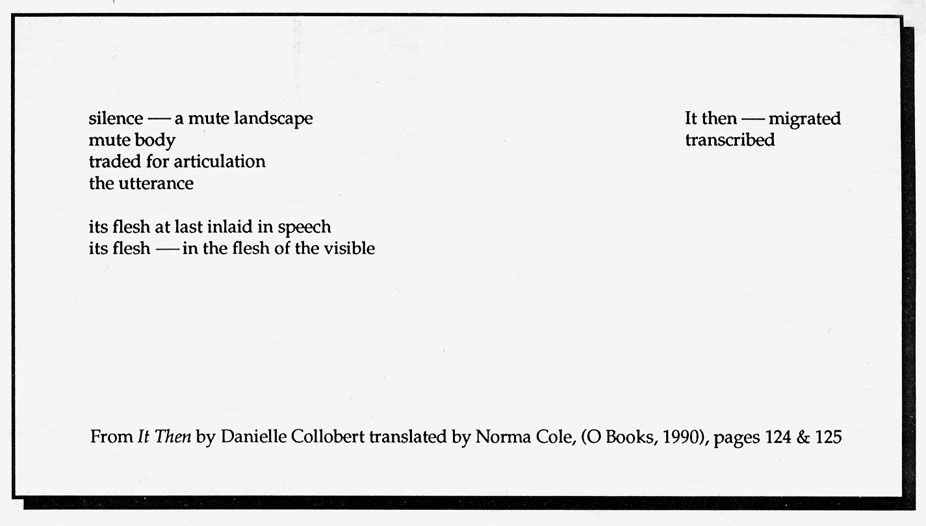

Editors' Notes
Beginning with translation -- what gets lost or carried across -- from body & gesture to word, not only from one language to another. To counter the usual presentation of a translation as given, as a "normal" artifact without trace of its transfiguration across borders of culture or history.
The slippery tow of water rushed in everywhere, undoing efforts to direct this issue. Not a search for "definitive" rendering. More of a giving over to the backwash from one shore to another: from text to reader, from the read to the written -- arriving at translate as transfigure, (trance & figure, water and ground). Crossing over or falling into the gaps -- brokeness opening form.
 --M.S.
--M.S.
Encountering the transformative energy behind translation: forms "hybridized" (see Marlatt); painting not described but transfigured through language; specific discourse displaced, reinvented (e.g. philosophical enquiry crossing over to lyric); the unspeakable brought to the point of utterance.
Norma Cole's recent translation of Danielle Collobert's It Then, along with Beverly Dahlen's review of this work forthcoming in Sulfur 26, strongly influenced our understanding of these issues of translation. Marlatt's "revisioning of beauty", the translation of rebel to "re-belle" and Finch's dismantling and regaining the sonnet form also served as important points of entry into our discussion. The work in this issue enacts an active engagement with the radicalizing pressure behind translation, its power to transfigure.
 --M.K.
--M.K.
•
Recently published or soon to appear: Laura Moriarty's new book of poems: Like Roads, Kelsey St. Press, P.O. Box 9235, Berkeley, Ca., 94709. As/Of The Whole by Dale Going, recipient of the 1990 S.F. State University Poetry Chapbook Competition. From Press Gang Publishers, 603 Powell St., Vancouver B.C., Canada, V6A 1H2: Proper Deafinitions "Collected Theorograms" by Betsy Warland; Telling It: Women and Language Across Cultures, edited by the Telling It Book Collective: essays, prose, poetry. The Inveterate Life, new poems by Jessica Grim, O Books, Oakland. Weeks: Hannah Weiner's television-based text with photographs by Barbara Rosenthal, (also available on tape), from Xexoxial Endarchy, Madison WI. Looking for Home: Women Writing About Exile, Milkweed Editions, Minneapolis.
•
Other Modernist/Feminist scholarship of interest: "A Force of Language", Beverly Dahlen's extended review of It Then by Danielle Collobert translated by Norma Cole is forthcoming in Sulfur 26 this fall. Feminist Theory and Simone de Beauvoir by Toril Moi, Bucknell Lecture Series, Cambridge, MA., 1990. From Routledge (29 W. 35th St. N.Y.C., N.Y.): The Pink Guitar: Writing as Feminist Practice, by Rachel Blau DuPlessis and Women of Bloomsbury: Virginia, Vanessa and Carrington by Mary Ann Caws. Also look for Tessera which publishes theoretical and experimental writing of Québécoise and English-Canadian feminists twice yearly.
HOW(ever), ISSN 0895-5-5743, is available in a sixth series of four numbers. For libraries interested in purchasing the complete series, beginning with Vol. I, we have a limited number of archival sets. Archival sets cost $12 per volume for individuals; $15 for institutions. Subscriptions for Vol. VI cost $10 for individuals; $12 for institutions. Individual copies of HOW(ever), often asked for as "sample copies," are available at $3 each from Small Press Distribution, 1814 San Pablo, Berkeley, CA 94702. Subscription checks for Volume VI of HOW(ever) should be made out to: HOW(ever), c/o Kim, RR 2 Box 190, Decorah, Iowa, 52101. $10 (individuals), $12 (institutions). Editorial Correspondence: c/o Stricker & Kim: 1171 East Jefferson, Iowa City, Iowa, 52245.

go to this issue's table of contents